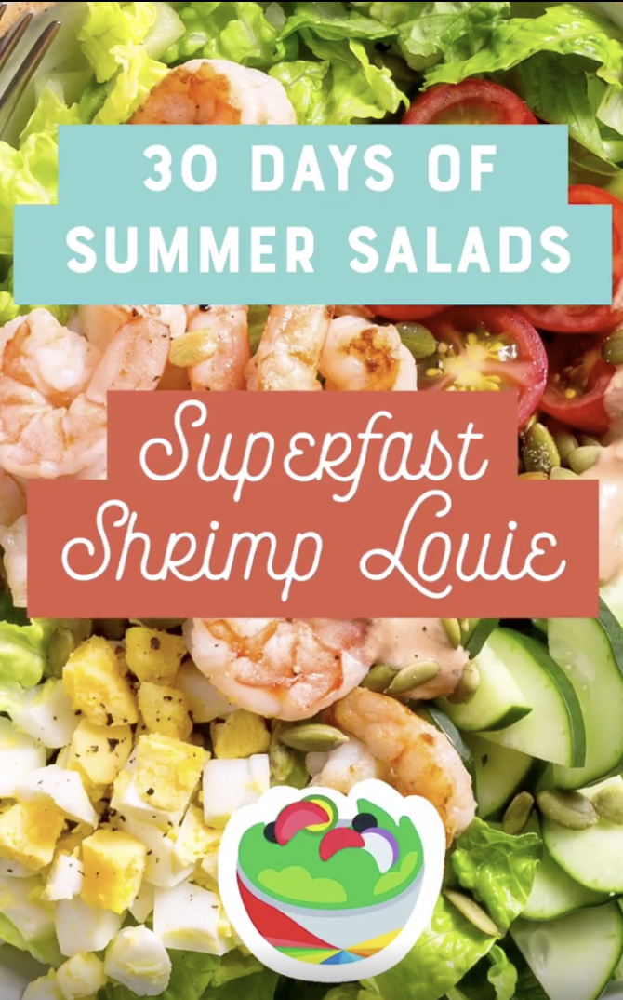
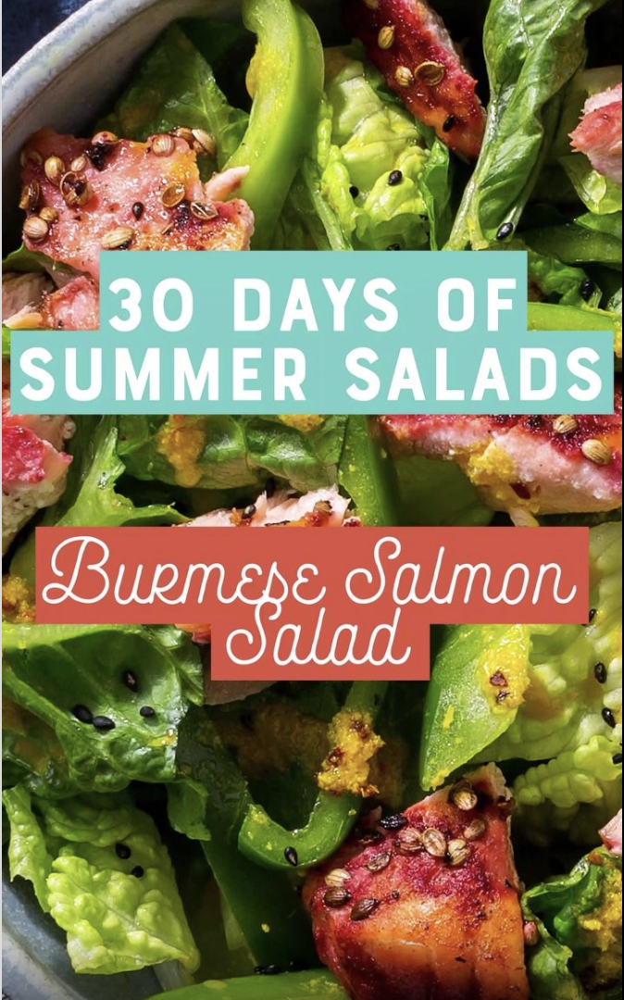

Residency · Sun Basket
Sun Basket
Four short films from 30 Days of Summer Salads — an Instagram TV series produced during my internship.
During my internship at Sun Basket I developed four episodes for the company's Instagram TV series, 30 Days of Summer Salads. Each piece is a small portrait of a dish — bright, quick, and made for summer.

Superfast Shrimp Louie
Instagram TV · food video · summer series
A quick-moving portrait of the classic Louie — sweet shrimp, crisp greens, and a dressing that comes together in minutes.
Watch the episode — Superfast Shrimp Louie →
Burmese Salmon Salad
Instagram TV · food video · summer series
An episode devoted to a vivid Burmese-style salad — flaked salmon, fresh herbs, and bright citrus in motion.
Watch the episode — Burmese Salmon Salad →
Mu Shu Lettuce Cups
Instagram TV · food video · summer series
A study in crunch and color — mu shu filling spooned into cool lettuce cups, captured for the summer series.
Watch the episode — Mu Shu Lettuce Cups →
Superfast Chipotle Marinated Shrimp
Instagram TV · food video · summer series
The series' smoky finale — shrimp in a chipotle marinade, seared and plated at Instagram speed.
Watch the episode — Superfast Chipotle Marinated Shrimp →